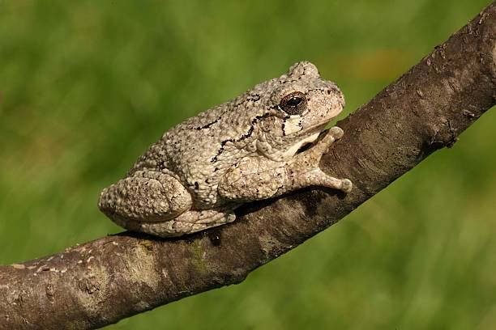
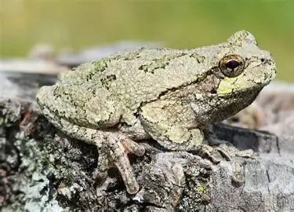
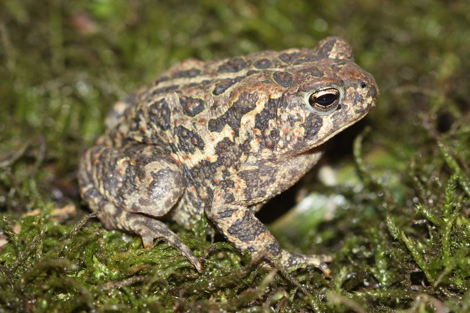

What frog is making a loud trilling noise at night in Iowa?
If it's a steady, buzzing trill rather than a sharp peep or a deep croak, you're almost certainly hearing one of three animals: the Eastern Gray Treefrog, Cope's Gray Treefrog, or the American Toad. All three are common across Iowa and all three trill — but the pitch, length, and texture of the sound are different enough to tell apart once you know what to listen for.
Compare the three trillers
| Species | Trill length | Pitch & texture | When you'll hear it |
|---|---|---|---|
| Eastern Gray Treefrog | About 1–2 seconds | Musical, slightly slower pulse, almost melodic | Late April through August, from trees near water |
| Cope's Gray Treefrog | About 1–2 seconds | Faster, harsher, more mechanical buzz — think a toy ratchet | Same season and habitat as the Eastern Gray Treefrog |
| American Toad | Up to 30 seconds, sustained | High, smooth, almost a single held musical note | Late spring to early summer, from shallow water or wet grass |
The quickest way to separate the two treefrogs from the toad is duration: a treefrog's trill is over in a couple of seconds, while the American Toad holds one long, continuous note that can run half a minute. Telling the two treefrogs apart from each other is harder and mostly comes down to texture — Cope's Gray Treefrog's call is noticeably more clipped and buzzy than the Eastern Gray Treefrog's smoother, slower pulse. In the field, even experienced listeners often need several calls side by side before they're confident which gray treefrog they're hearing.
Eastern Gray Treefrog

Cope's Gray Treefrog

American Toad

Listen to each call
Reading a description only gets you so far. Press play on each recording below with your eyes closed and compare the length and texture to what you heard outside.
Eastern Gray Treefrog
Cope's Gray Treefrog
American Toad
Where the sound is coming from
All three species call from in or near standing water — ponds, ditches, flooded fields, and retention basins all qualify. The two treefrogs often call from several feet up in nearby trees or shrubs rather than from the water itself, which is why the sound can seem to come from everywhere at once. The American Toad calls low, usually right at the water's edge or from shallow water.
Could it be something else?
A few sounds commonly get mistaken for frog trills. Cicadas produce a similar buzzing tone but call during the day in mid-to-late summer, not at night in spring. Crickets produce a higher, more clicking chirp rather than a sustained trill. If the sound is happening after dark between April and August and includes a clear, continuous buzzing or musical note, a frog or toad is the more likely source.
Hearing more than one at once?
During peak season, it's common to hear several species overlapping — a treefrog trilling in the branches while a toad holds its note from the water below. If the chorus sounds layered rather than like one repeating sound, that's a good sign you're hearing more than one species at the same pond. Our frog vs. toad guide can help if you manage to spot one of the callers and want to confirm what you're looking at.